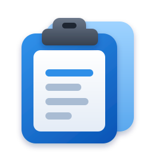

SweaxClip
A permanent, searchable clipboard history for Windows. Press Win + V and everything you have copied is there — text, links, images, screenshots and files. Windows için kalıcı ve aranabilir pano geçmişi. Win + V'ye bas; kopyaladığın her şey orada — metin, bağlantı, görsel, ekran görüntüsü ve dosya.


Everything you copy, keptKopyaladığın her şey saklı
The clipboard history built into Windows keeps 25 items and clears them on restart. SweaxClip keeps all of them.Windows'un kendi pano geçmişi 25 öğe tutar ve yeniden başlatınca siler. SweaxClip hepsini saklar.
Replaces Win + VWin + V'nin yerine geçer
Opens under your text cursor and pastes straight into the app you were using.
Yazı imlecinin altında açılır ve seçtiğini doğrudan kullandığın uygulamaya yapıştırır.
Unlimited historySınırsız geçmiş
Nothing is deleted automatically. Repeated copies move to the top instead of piling up.
Hiçbir şey kendiliğinden silinmez. Tekrarlanan kopyalar yığılmaz, en üste çıkar.
Sorted automaticallyKendiliğinden ayrılır
Text, links, images, screenshots, files, code and colours each have their own category.
Metin, bağlantı, görsel, ekran görüntüsü, dosya, kod ve renk ayrı kategorilerde.
Search inside screenshotsEkran görüntüsünde arama
Images are read by the OCR engine built into Windows, on your PC.
Görseller Windows'un kendi OCR motoruyla, bilgisayarında okunur.
Matches WindowsWindows'a uyar
Follows your light or dark theme and accent colour, with Mica and Acrylic on Windows 11.
Açık/koyu temanı ve vurgu rengini izler; Windows 11'de Mica ve Acrylic kullanır.
Private and lightGizli ve hafif
No network requests. Around 10 MB of memory while idle, no CPU until you copy.
Hiç ağ isteği yok. Beklerken yaklaşık 10 MB bellek; kopyalayana kadar işlemci kullanmaz.
The quick panelHızlı panel
Categories are one Tab away and typing searches. Hold Alt to see numbers for one-key pasting.Kategoriler bir Tab uzaklıkta, yazmaya başlamak arama yapar. Tek tuşla yapıştırmak için Alt'a basılı tut; numaralar görünür.


| Win V | Open or closeAç veya kapat |
| ↑ ↓ | SelectSeç |
| Enter | PasteYapıştır |
| Shift Enter | Paste as plain textDüz metin yapıştır |
| Alt + 1–9 | Paste a numbered itemNumaralı öğeyi yapıştır |
| Tab | Next categorySonraki kategori |
| Ctrl P | PinSabitle |
| Delete | Move to trashÇöpe taşı |
| Ctrl E | Show in the libraryKütüphanede göster |
The libraryKütüphane
Browse by category, see screenshots as a gallery, and check where each item came from.Kategorilere göre gez, ekran görüntülerini galeri olarak gör, her öğenin nereden geldiğine bak.


Compared with WindowsWindows ile karşılaştırma
| Windows clipboard historyWindows pano geçmişi | SweaxClip | |
|---|---|---|
| Items keptTutulan öğe | 25 | UnlimitedSınırsız |
| After a restartYeniden başlatınca | ClearedSilinir | KeptKalır |
| ImagesGörseller | Up to 4 MBEn fazla 4 MB | Any sizeHer boyut |
| SearchArama | — | Including text in imagesGörsellerdeki yazı dahil |
| Copied filesKopyalanan dosyalar | — | KeptSaklanır |
| BackupsYedek | — | DailyGünlük |
InstallKurulum
Downloadİndir
SweaxClip-win-x64.zip — then extract it. — sonra aç.
Run SweaxClip.exeSweaxClip.exe'yi çalıştır
It installs itself, starts with Windows and imports your existing screenshots.
Kendini kurar, Windows ile başlar ve mevcut ekran görüntülerini ekler.
Press Win + VWin + V'ye bas
From now on, everything you copy is kept.
Bundan sonra kopyaladığın her şey saklanır.
The executable is not code-signed yet, so SmartScreen may show a warning — choose More info → Run anyway. Releases are built from the public source by GitHub Actions.
Uygulama henüz kod imzalı değil; SmartScreen uyarı gösterebilir — Ek bilgi → Yine de çalıştır'ı seç. Sürümler açık kaynak koddan GitHub Actions ile derlenir.